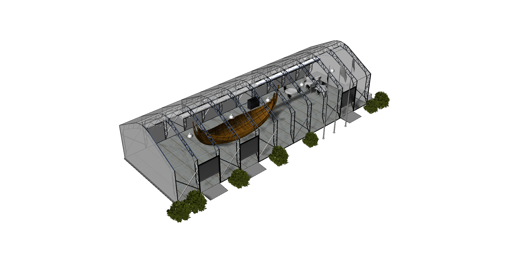

Customize the weather at your please by clicking below.
Time of Day
Day| Night
Weather
Sunny | Rainy | Snow
The Bronze Age Boat is being reconstructed at NYU Abu Dhabi.

New York University Abu Dhabi and Zayed University are constructing an 18-m Bronze Age ship for display in the central atrium of the Zayed National Museum. The ship will provide visitors with an invaluable example of one of the earliest forms of maritime technology in the Arabian Gulf. The ship will be a reconstruction of a hypothetical trading vessel from the Umm an-Nar period during the late 3rd millennium BC, with internal wooden framing and an outer hull composed of reed bundles coated in bitumen. It will be built by professional shipwrights and students from both universities. The vessel will rely a variety of historical evidence, including archaeological boat remains, iconography, and cuneiform texts from the Bronze Age, and will be constructed of natural, authentic materials that were available in the region at the time.
 High Seas
High Seas